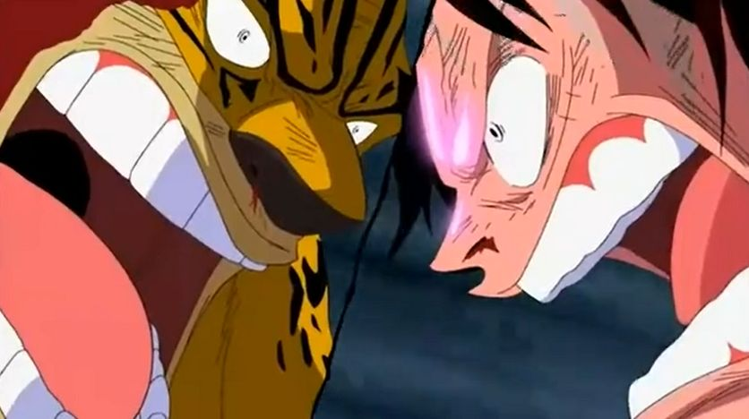

エニエスロビー編
ギア２
ＣＰ９に連行され、〝司法の島〟エニエス・ロビーに到着したロビンとフランキー。そこではＣＰ９のジャブラ、クマドリ、フクロウ、そしてＣＰ９長官であるスパンダムがルッチ達の帰還を待っていた。一方、サンジ、そげキングと合流したルフィ達も島に到着する。
ルフィは１万に及ぶ海兵をたった一人でなぎ倒し、包囲網を突破。その前にＣＰ９のブルーノが立ちはだかるも、ルフィは新技〝ギア２（セカンド）〟でこれを撃破する。
宣戦布告
ロビンを救おうと懸命に戦う仲間達。だがロビンはそんな彼らに対し、「私はもう…死にたいのよ!!!!」とその手を拒む。〝歴史の本文（ポーネグリフ）〟が読めた為、幼い頃から世界政府に追われ、裏切りが当たり前の世界で生きてきたロビン。自分がそばにいる事で〝大切な仲間〟が世界政府に狙われ続け、そのせいで彼らにいつか見限られるかもしれない。それがロビンにとっては何より怖かったのだ。
それを聞いたルフィは、そげキングに世界政府の旗を撃ち抜かせる。それは仲間を苦しめてきた世界政府への、ルフィからの〝宣戦布告〟だった。これまで生きる事を否定され続けてきたロビンは、仲間達が心の底から自分を救おうとしてくれていると知り、初めて「生きたい」とその願いを口にする。
海賊vsＣＰ９
 ロビンを解放する為、ＣＰ９に戦いを挑む麦わらの一味。ＣＰ９の高い戦闘能力に苦戦を強いられながらも、ゾロ達は何とかこれを撃破。あとはルフィとルッチ、二人の決戦を残すのみ。だがそのさなか、スパンダムが誤って〝バスターコール〟を要請してしまう。
海軍艦隊による砲撃がエニエス・ロビーに降り注ぐ中、ルフィは切り札〝ギア３(サード)〟を発動。さらに〝ギア２〟で残る力を出しつくし、ついにルッチを倒す。
メリー号との別れ

ＣＰ９には勝利したものの、海軍の艦隊に囲まれ、追い詰められた麦わらの一味。だがそのとき、「下を見ろ」という謎の声が届く。声に従い、海へと飛び込む仲間達。そこに待っていたのは、ウォーターセブンで嵐の海に消えたはずのメリー号だった。メリー号に乗り込んだルフィ達は、海軍の包囲を突破し、エニエス・ロビーから脱出する。
海軍を振り切った直後、メリー号はまるで役目を終えたかのように大破してしまう。「もう眠らせてやれ」というアイスバーグの言葉に、ルフィはメリー号を見送る事を決心する。炎に包まれていく船を見守るルフィ達に、メリー号の〝声〟が届く。それは、これまでずっと大切にしてくれた〝仲間〟への感謝の言葉だった。
ルフィの家系
ウォーターセブンに戻ったルフィ達は、フランキーから新たな船を造ってもらえる事に。だがその矢先、海軍の英雄と謳われる海軍本部中将ガープが、部下のコビー、ヘルメッポ達を連れて、ルフィのもとを訪れる。ガープがルフィの祖父であると知り、驚愕する仲間達。さらにローグタウンでルフィを助けた謎の男、〝世界最悪の犯罪者〟にして〝革命家〟のドラゴンが、ルフィの実の父親である事も明らかに。この事実はルフィですらも初めて耳にする事だった。
久しぶりの再会に喜ぶルフィとコビー。別れの際、ルフィ達は〝偉大なる航路（グランドライン）〟後半の海である〝新世界〟での再会を固く誓い合う。
夢の船
数日後、船の完成の報告と共に、麦わらの一味〝全員〟が賞金首になったとの知らせが届く。新たな手配書には、フランキーの名も含まれていた。ルフィはフランキーを仲間に誘うが、ウォーターセブンを守る事が自分に課せられた使命だと考えていたフランキーは、その誘いを断る。だがアイスバーグと一家の弟分達に説得され、〝船大工〟として麦わらの一味の船に乗る事を決めるのだった。
そして、ケンカ別れのせいで一味に戻れずにいたウソップも、謝罪と共に「もう一度仲間に入れてくれ」と思いのたけをぶつけ、再び仲間に迎え入れられる。ようやく全員がそろった麦わらの一味は、新たな船〝サウザンド・サニー号〟で追っ手のガープを振り払い、次の目的〝魚人島〟を目指す。